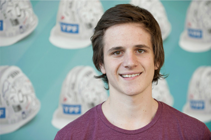

A principios de 2013 se otorgaron por concurso 100 becas de estudio para carreras vinculadas a la industria del petróleo y del gas en Universidades públicas de Argentina.
El programa convocó a jóvenes egresados de escuelas secundarias de modalidad técnica que acreditaran un promedio general de 8 o más puntos y que hubieran iniciado su carrera en 2013 y finalizado sus estudios secundarios entre 2010 y 2012.
La convocatoria fue dirigida a las siguientes ingenierías: Petróleo, Perforaciones, Eléctrica/Electricista, Electrónica, Electromecánica, Mecánica, Mecatrónica, Química, Energía, Materiales, Ambiental; y las siguientes licenciaturas: Geología, Geofísica, Geoquímica, Geodesia, Medio ambiente, Energética, Física.
La beca consiste en un aporte de 12 cuotas mensuales de $1.300, y la posibilidad de ser renovada hasta cumplir un máximo de 5 años, de acuerdo al desempeño y rendimiento académico demostrado por cada estudiante.
Los becarios fueron seleccionados por un Comité formado por especialistas de reconocida trayectoria académica y profesional, cuyos nombres se dieron a conocer junto con los candidatos seleccionados.
Este programa forma parte de las acciones que la Fundación YPF ha puesto en marcha desde el 2012 junto al Ministerio de Educación de la Nación y universidades nacionales para impulsar la formación de una nueva generación de profesionales del sector energético.
Sonrientes y emocionados, contagiaban entusiasmo: Natalia, Jimena, Enzo, Leandro y Gastón son cinco de los primeros 100 jóvenes que recibieron las Becas Fundación YPF para estudiar carreras universitarias vinculadas a la industria energética.
Cuando descubrió que la Ingeniería en petróleo era lo suyo, Leandro Valeiro, fue a anotarse a la universidad privada donde se dictaba. Pero rápidamente se dio cuenta que no podía pagar la cuota. Unos meses después, cuando se enteró que la carrera empezaría a dictarse en la Universidad Nacional Arturo Jauretche, sintió que era un guiño del destino.
La carrera llegó a esa universidad de la mano del acuerdo que la casa de estudios firmó con la Fundación YPF y la convirtió en la primera universidad nacional del conurbano en ofrecer esta currícula. Cuando lo llamaron de la universidad para proponerle que se postulara en las becas, ni lo dudó. La suerte volvió a darle la derecha: es uno de los 100 ganadores.
Leandro vive con sus padres y hermanos en Berazategui. Hijo de un papá chapista y una mamá comerciante, Leandro es el primero de la familia que cursa la universidad. Su hermano vive en Bariloche y el sueña ir a trabajar a algún destino remoto una vez que se reciba. “Esta beca nos ayuda a seguir”, aseguró.
Sonrientes y emocionados, contagiaban entusiasmo: Natalia, Jimena, Enzo, Leandro y Gastón son cinco de los primeros 100 jóvenes que recibieron las Becas Fundación YPF para estudiar carreras universitarias vinculadas a la industria energética.
"Estoy aprendiendo a estudiar y estoy aprendiendo a… vivir", confió Enzo Zorzi Ruggiero. A los 18 años dejó su casa paterna en Santa Rosa, La Pampa, para estudiar Física en Bahía Blanca. Lo separan de su casa 300 kilómetros. "Me costó mucho estar solo pero de a poco me voy acomodando", dijo Enzo, el mayor de cuatro hermanos.
Hijo de un farmacéutico y un ama de casa, Enzo sabe que la carrera que eligió es más que original. "Siempre me gustó saber el porqué de las cosas. Me gusta la Física aplicada", contó. Un compañero que estudia Geología le contó de la beca y se postuló. "Estaba en Santa Rosa cuando me llamaron. Además del apoyo económico, sentís que estás entre 100 personas en las que confían –dijo-. Me dan ganas de estudiar, es una razón más."
Sonrientes y emocionados, contagiaban entusiasmo: Natalia, Jimena, Enzo, Leandro y Gastón son cinco de los primeros 100 jóvenes que recibieron las Becas Fundación YPF para estudiar carreras universitarias vinculadas a la industria energética.
Gastón Alarcón nació en Goya, Corrientes, y es el único de los becados que estudia en la Universidad Técnica Nacional de Resistencia, en el Chaco. Estudia Ingeniería en Electromecánica. La salida laboral amplia en la región lo tentó. A los 20 años, Gastón sigue los pasos de su papá, su hermano y su tío. "Mi idea es quedarme ahí después de recibirme, pero hay que ver dónde termino", señaló.
Vive en resistencia con el hermano que cursa el quinto año de la carrera: tiene la respuesta a sus consultas en su propia casa. Un tío que trabaja en la planta de Barranqueras de YPF le contó de la beca. Se anotó por Internet en febrero y lo llamaron hace unos días. "Me sorprendió muchísimo. Te motiva para recibirte", afirmó.
Sonrientes y emocionados, contagiaban entusiasmo: Natalia, Jimena, Enzo, Leandro y Gastón son cinco de los primeros 100 jóvenes que recibieron las Becas Fundación YPF para estudiar carreras universitarias vinculadas a la industria energética.
"Mi papá me levantó de la cama para que me inscribiera, apenas se enteró de las becas", dijo riéndose Jimena Moreno. Es de Caleta Olivia, Santa Cruz, pero estudia Química en Córdoba. Decidió mudarse de provincia para vivir con ella y ahorrarse así el alquiler que suponía estudiar en Río Gallegos.
"Estoy recontenta con la beca. Además de la ayuda económica, que es de mucha ayuda para mí, es un empujón fuerte para estudiar", comentó la flamante alumna universitaria de 19 años. Descubrió la vocación en el secundario y se fue enganchando con el correr de los meses. "Me gusta la química y sé que va a tener buena salida laboral en el Sur. Mi idea es volver, claro", agregó.